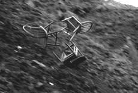

|
FALL
Patrick Jolley | Irland 2008 | 11 Min.
Material: HDV
Format: DigiBeta
Originalsprache: o. Dialoge
Kamera: Denise Woods
Sound Design & Musik: Brian Crosby, Nick Seymour
Schnitt: Bobby Good
Produktion: Patrick Jolley
Vertrieb: Patrick Jolley
Verschobene Logik: Es regnet Stühle, Häuser versinken oder treiben ab. Apokalyptische Versuchsanordnung, als kunstvolles Experiment mit der Wirklichkeit.
Langeweile bringt ihre eigene Träumerei hervor. Hier wird zu dort, was irgendwo sein könnte. Dies fällt mit dem Vorspann zusammen: die Wiederholungen untergraben den Sinn der Orte und machen die Gebäude scheinbar weniger fest. Die Logik dieser Verlagerungen verursacht, dass die Dinge abtreiben. Kleine Häuser fallen in sich zusammen und verbrennen. Das Mobiliar zerschellt in einem leeren Parkplatz. Die Geschichte kleiner, pathetischer und vorübergehend kathartischer Zerstörungen. – Patrick Jolley
Patrick Jolley , geb. 1964 in Nordirland, Filmemacher und Medienkünstler. Er besuchte das Royal College of Art in London. Seine Arbeiten wurden u.a. im PS1 Moma in New York, im Museum für Zeitgenössische Kunst in Rom, in den Kunstwerken Berlin und im Tate Modern in London ausgestellt und weltweit auf Filmfestivals gezeigt. Er lebt und arbeitet in Irland.
Filme: Seven Days 'til Sunday 1998 | Drowning Room 2000 | Burn 2002 | HereAfter 2004 | Sugar 2005 | Sog 2007 | Fall 2008 | This Monkey 2008
zurück
|